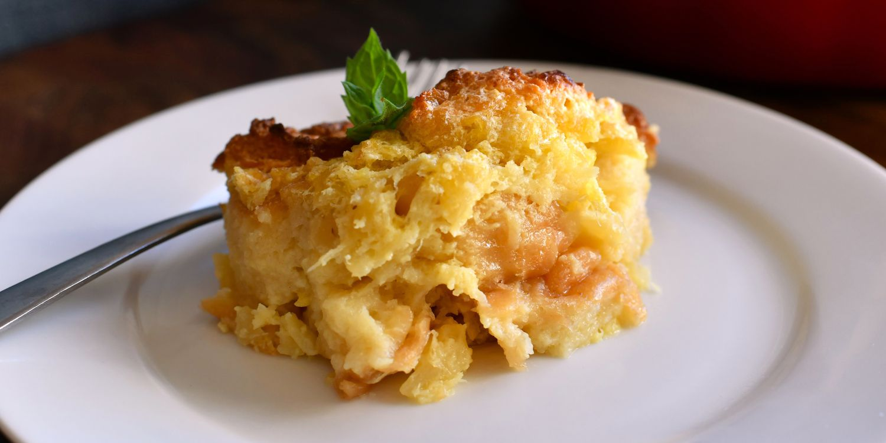

Return
Scalloped Pineapple Souffle

Description
This is a wonderful pineapple dish to be served with ham.
It is a favorite at Easter in my family. The egg whites add a touch of lightness to it.
Ingredients
- 3 eggs, whites and yolks seperated
- 1 ½ cups white sugar
- ½ cup butter
- ½ cup milk
- 1 (15 ounce) can crushed pineapple, drained
- 3 cups cubed bread
Steps
- Preheat oven to 350 degrees F (175 C).
- Beat egg whites until foamy in a large glass or metal mixing bowl until stiff peaks form.
Lift your beater or whish straight up: the egg whites should form a sharp peak that holds its shape.
- Beat the egg yolks, sugar, butter, and milk together in a large bowl.
Stir in the pineapple and bread. Lightly fold egg whites into the pineapple mixture, then spread the mixture into a large baking dish.
- Bake in the preheated oven until golden brown, for 35 to 45 minutes.